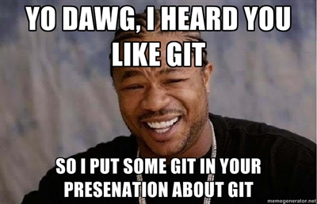

Get with Git
Distributed Version Control and why you should use it.
- or -
How I learned to stop worrying and love branching.
Jorin Slaybaugh - Refresh Wichita Falls - May 21, 2012Who am I
- VP of Technology at E-vent Software
- Live and work in Wichita Falls
- Graduated from MSU in 2002
- .NET | SQL | Windows
- HTML | CSS | JavaScript
- Twitter: @jslaybaugh
- Email: jslaybaugh@gmail.com
Brief History of Git
Created in 2005 by Linus Torvalds
Why?
Working on Linux kernel and needed better version control system than what they were using (BitKeeper). So, if it doesn't exist (and you're Linus Torvalds), you create it yourself.
Had been using tarballs and patches so he built the system around a similar concept: snapshots of a point in time stored as binary objects in directory.
Finished the code in less than a month and 1.0 was released later that year (only on version 1.7 in 2012)
Alright, that's cool...
But What Does It Mean????
Let's go back a bit... What is version control and why do we need it?
Purposes
Need to be able to incrementally advance projects -- often with a team
Aren't there plenty of other solutions?
Subversion, SourceSafe, TFS
All are centralized and the latter two require VS
Mercurial (Hg) exists and is similar to Git
OK, I'm convinced. How does it work?
Time to play

Transition Styles
You can select from different transitions, like:
Marvelous Unordered List
- No order here
- Or here
- Or here
- Or here
Fantastic Ordered List
- One is smaller than...
- Two is smaller than...
- Three!
Global State
Set data-state="something" on a slide and "something"
will be added as a class to the document element when the slide is open. This let's you
apply broader style changes, like switching the background.
"blackout"
"soothe"
Custom Events
Additionally custom events can be triggered on a per slide basis by binding to the data-state name.
Reveal.addEventListener( 'customevent', function() {
alert( '"customevent" has fired' );
} );
Clever Quotes
These guys come in two forms, inline:
The nice thing about standards is that there are so many to choose from
and block:
For years there has been a theory that millions of monkeys typing at random on millions of typewriters would reproduce the entire works of Shakespeare. The Internet has proven this theory to be untrue.
Pretty Code
var supports3DTransforms = document.body.style['webkitPerspective'] !== undefined ||
document.body.style['MozPerspective'] !== undefined ||
document.body.style['perspective'] !== undefined;
function linkify( selector ) {
if( supports3DTransforms ) {
var nodes = document.querySelectorAll( selector );
for( var i = 0, len = nodes.length; i < len; i++ ) {
var node = nodes[i];
if( !node.className || !node.className.match( /roll/g ) ) {
node.className += ' roll';
node.innerHTML = '' + node.innerHTML + '';
}
};
}
}
linkify( 'a' );
Courtesy of highlight.js.
Intergalactic Interconnections
You can link between slides internally,
like this.
Fragmented Views
Hit the next arrow...
... to step through ...
any type- of view
- fragments
Spectacular image!